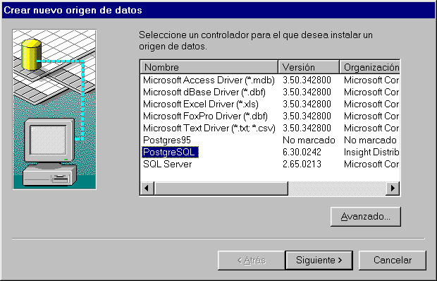
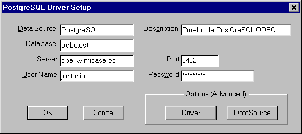
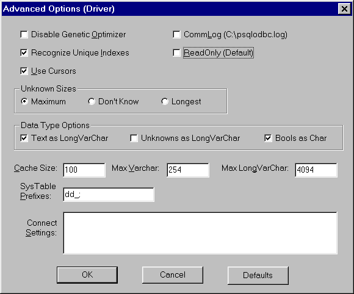
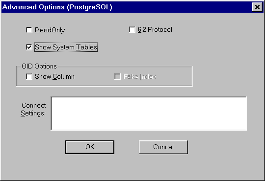
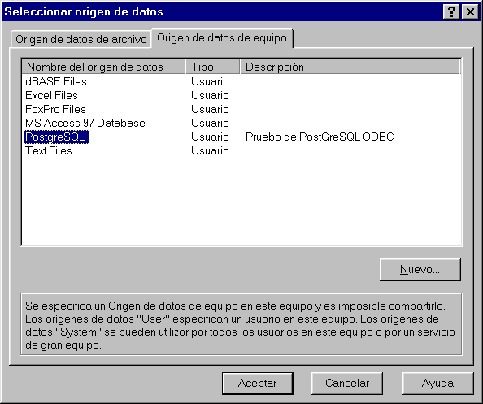
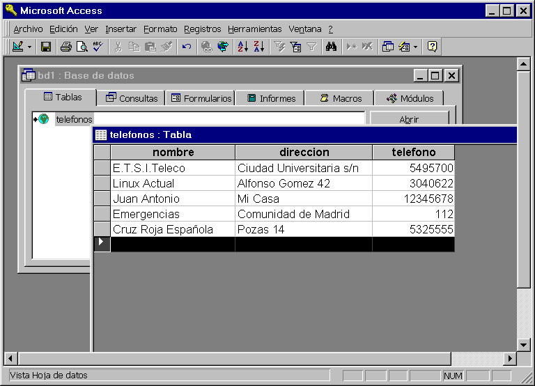

Autor:
Juan Antonio Martinez Castaño
E-mail:
jantonio@drake.dit.upm.es
Antes que nada, es preciso que el Protocolo TCP-IP se encuentre instalado en
el sistema Windows, y que la conectividad entre Windows y Linux funcione sin
problemas
En el CDROM que se acompaña a esta revista se encuentran bajo el
directorio odbc/postodbc-0.21 los siguientes ficheros correspondientes a la
versión 0.21 de PostODBC, adecuados para las versiones de PostGreSQL
anteriores a la 6.2
( recordemos que hasta la version 6.1 el nombre oficial del servidor de bases de datos era PostGres95. Es interesante leer en el Web la evolución de este paquete de software, nombres incluidos... )
Para aquellos lectores que trabajen con la version de PostGreSQL que se distribuye con el CD-ROM, o que no necesiten instalar la versión de 16 bits recomendamos que se instalen los drivers correspondientes a la version 0.30 de PostODBC, denominada PsqlODBC. Bajo el directorio postodbc-0.30 encontramos los siguientes ficheros:
Para instarlos, escogemos el fichero apropiado para nuestro sistema, lo descomprimimos y ejecutamos el programa "setup" ( para la version 0.21. para la version 0.30, basta con ejecutar el fichero postdrv.exe ). MUY IMPORTANTE: solo deberemos instalar una de las versiones de drivers, pues son incompatibles entre si - El autor pasó media hora de "regedit" hasta conseguir arreglar el desaguisado... - Si nuestro sistema es Windows-3.xx no tenemos otra eleccion que instalar el fichero po021-16.tgz, pues la version 0.30 solo esta soportada en 32 bits
|  |
| figura 1: Selección de los diversos DSN |
|---|
|  |
| figura 2: Ventana de setup del driver ODBC |
|---|
|  |
| figura 3: Opciones avanzadas (driver) |
|---|
|  |
| figura 4: Opciones avanzadas (PostGreSQL) |
|---|
Para ello, deberemos haber obtenido e instalado desde el CD-Rom de
Office 97 el Access, e incluír en la instalación los paquetes de acceso
remoto. Una vez realizado, arrancamos Access y abrimos una base de datos
vacia.
Recordemos que ODBC nos permite:
|  |
| figura 5: Vinculación de datos a un DSN |
|---|
Windows entonces establece la conexión y nos presenta una lista de tablas que estan incluídas en la database seleccionada. Nosotros escogemos la que se editó en su día "teléfonos". Eh voilá! la tabla es cargada en Access y a partir de ahora se convierte en una database local.
No olvidemos que la operación que hemos realizado es "Importar". Esto es: coger una base de datos remota, traerla y convertirla en una database local. cualquier modificación que hagamos en ella no se verá reflejada en la database original del servidor. Es más, si intentamos exportar dicha tabla, el servidor indicará educacamente, que esa database ya existe, y que no podemos cargarla. La única solucion sería exportarla con un nombre nuevo... ( siempre y cuando hayamos configurado PostGreSQL para que el usuario pueda crear y/o modificar databases... )
Por ello, la mayor parte de las veces, lo que haremos sera "vincular" esto es: establecer un enlace entre los datos que vemos y modificamos y la base de datos. Técnicamente hablando, lo que se hace es almacenar en el servidor la secuencia de operaciones realizadas en el cliente, y cuando el usuario pulsa "Guardar" se genera una orden COMMIT que hace que todo el history se vuelque en la base de datos. En caso de que por alguna razón no se pueda realizar el COMMIT, el servidor genera el mensaje de error correspondiente, y efectua un rollback para deshacer todos los cambios realizados desde el último "guardar"
|
Así pues, efectuamos un vínculo a "teléfonos" y añadimos una nueva entrada. La pantalla queda tal y como se indica en la imagen de la figura 6. Al pulsar en "guardar", los datos son volcados al servidor. Para comprobarlo, desde un telnet al servidor, lanzamos el interprete de sql y realizamos un select sobre la base de datos. Como esperabamos, la entrada ha sido añiadida.
|  |
| figura 6: Ejemplo de database remota con MS-Access |
|---|
Esto es todo. Tal vez un poco complicado de configurar, pero una vez realizada la configuración, el trabajo se reduce simplemente a arrancar Access y seleccionar la base de datos... Ademas, varios usuarios pueden trabajar a la vez con la misma database, y desde programas distintos!! ODBC provee un API de programación, que en esencia es un interprete de ordenes SQL, y que permite a los programadores enganchar sus aplicaciones con el servidor de databases, de forma sencilla y transparente. Access no es sino otra aplicacion mas...
Aunque el artículo se ha centrado sobre la instalación del API ODBC para Windows, ODBC no es exclusivo de este sistema. Como vimos en el número anterior de Linux ACTUAL, Existe todo un grupo de trabajo que está portando el API de ODBC a UNIX en forma de librería GPL, de manera que con independencia de la database escogida ( cada una con su propia librería de desarrollo ) exista un API universal que todas ellas entiendan y sepan manejar, y que además es el mismo en UNIX que en MS-Windows.
|
Por otro lado, hemos dejado para un capítulo posterior el interfaz JDBC, Java DataBase Conectivity. En esencia no es sino un API ODBC para java. De hecho, Sun Microsystems distribuye como paquete estandard en su Java Development Kit una implementación de JDBC que no es sino una pasarela JDBC-ODBC. De esta manera, mientras los programadores de servidores de databases no implementen su propia JDBC; puesto que ninguno, por motivos comerciales mas que obvios, deja de implementar ODBC, JDK siempre tiene una pasarela de acceso a todas las bases de datos
Deliberadamente se ha dejado de lado una descripción detallada de la librería del API ODBC, asi como la descripción de comandos SQL. Si los lectores lo estiman oportuno, en futuras ediciones de Linux Actual se incluirán cursillos sobre estos temas
Una última noticia: en el momento de escribir estas líneas, el grupo Insight ( la antigua Borland ) ha anunciado la compra de los derechos del copyright de PostODBC para Windows-XX, manteniendo su caracter GPL, y manifestado su intención de desarrollar nuevas herramientas de interacción con PostGreSQL en sus aplicaciones Middleware